Branding
KOMA
A brand identity built for KOMA, a modern local food brand reimagining Nigerian meals in a clean, contemporary, and slightly premium way, developed across a Day 1 brand identity brief.
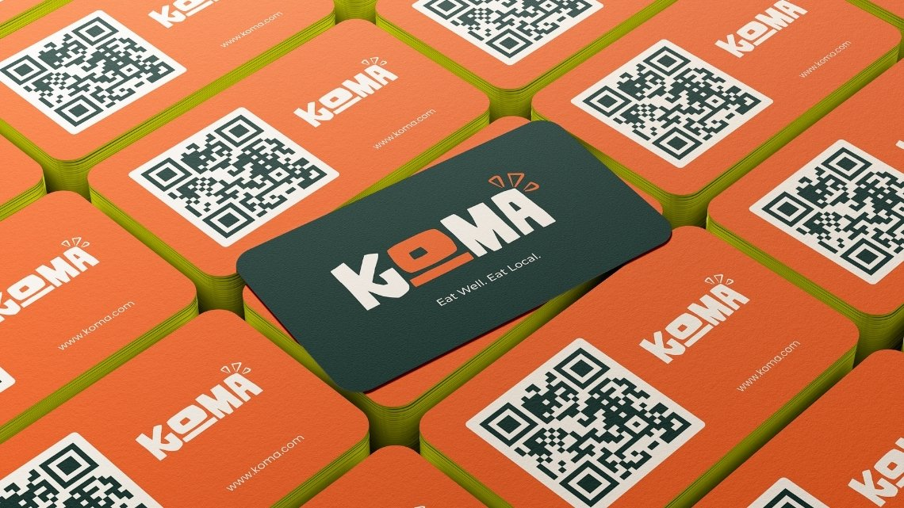
(01) — The brief
The Brief
This project came from a Day 1 brand identity task run by @the_designation on X (Twitter). The task was to build a complete visual identity for KOMA, a modern food brand that reimagines local Nigerian meals in a clean, contemporary, and slightly premium way, blending bold local flavors with refined presentation so the brand feels culturally rooted and globally relevant at once.
The brief asked for a design that balanced culture and modern simplicity while still holding a bold, memorable presence, something intentional and structured enough to stay consistent across touchpoints for both local and international audiences. One condition stood out: no cliché food visuals, so chef hats, spoons, and forks were off the table from the start. It called for a specific set of deliverables:
- Complete logo presentation
- Brand identity elements
- Minimum of 2 flyer designs
- High-quality mockup presentation
With the clock running on a single day, the challenge was building a mark and a system that could carry its own personality without leaning on the usual food-brand shortcuts.
(02) — The process
The Process
Logo concept
Since the brief ruled out chef hats and cutlery, I leaned into hand-cut, slightly uneven letterforms instead, something that felt made rather than manufactured. The 'O' sits in its own orange block as a little pot, with the line underneath standing in for a stove, and a few flame-like marks flick off the 'A' to carry that same heat without drawing an actual spoon or fire. That playful imperfection in the letters ended up carrying most of the brand's personality.
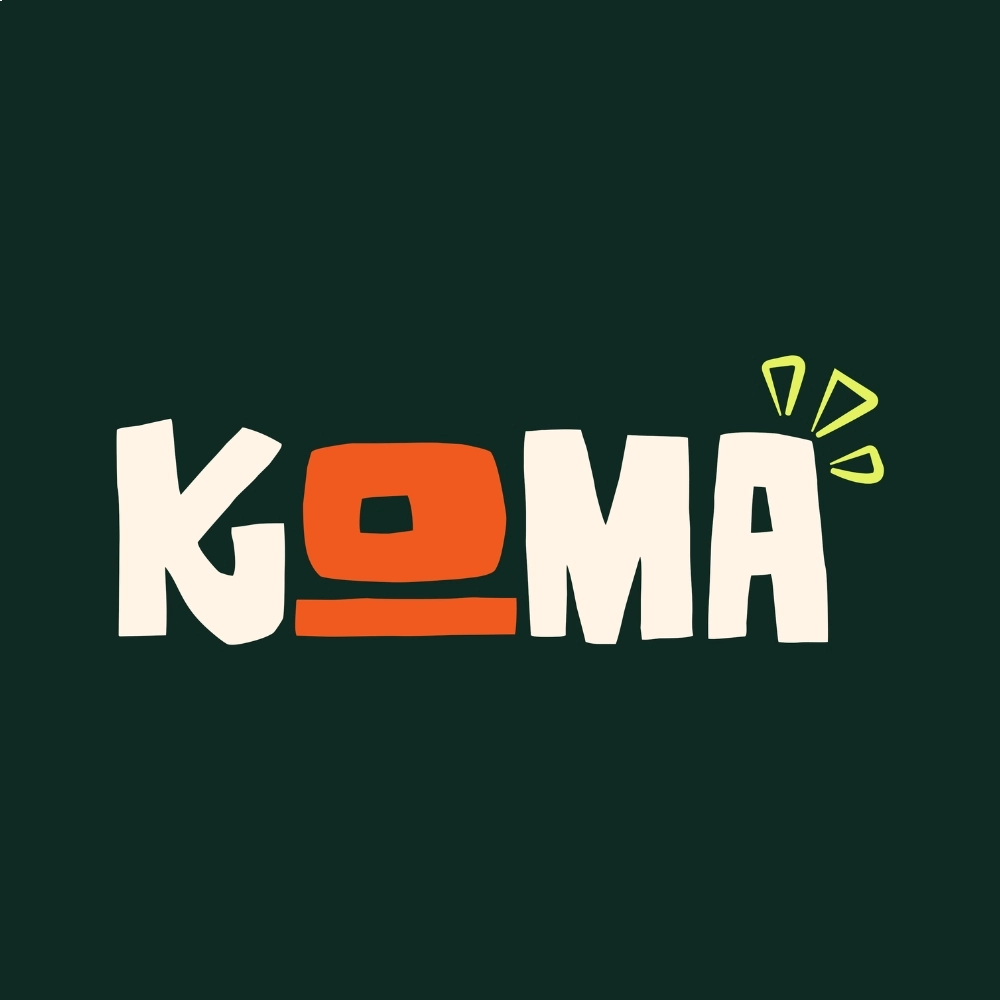
Primary lockup on the brand's dark green, the most-used background across the system.
The mark on its own, pulled out as an icon for spaces too small for the full wordmark.
Color system
The palette pairs a warm off-white with deep forest green, a punchy orange, and a lime accent, with black held in reserve for high-contrast moments. Green and orange do most of the heavy lifting since they read as fresh and appetizing without falling back on the red-and-yellow fast food formula, and the lime gives the system a bit of a modern, slightly loud edge that keeps it from feeling too safe.
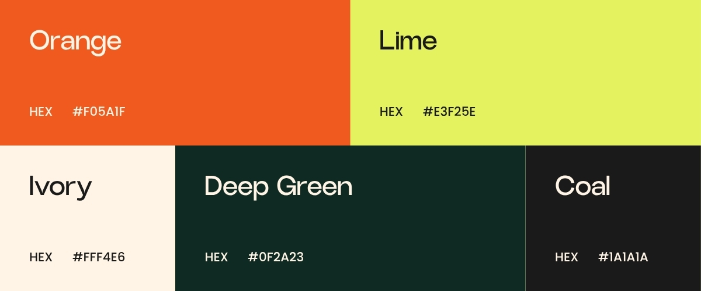
The five colors that make up the KOMA palette.
Typography
Supporting copy runs in a bold, condensed display font for anything that needs to shout, like the "Eat Well. Eat Local." tagline, paired with a cleaner sans for body copy and flyer details so pricing and contact information stay easy to scan.
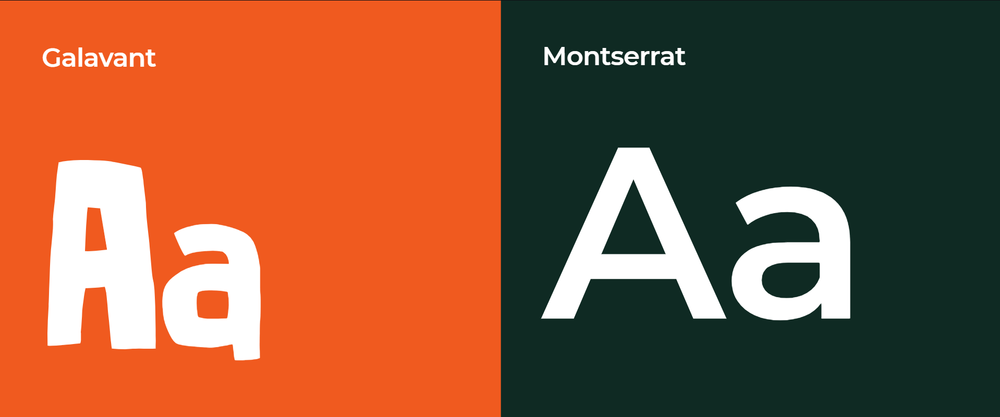
Mockups
The deliverables called for a high-quality mockup presentation, so the last stretch of the day went into placing the identity onto things KOMA would actually use: business cards, takeout bags, a cap, and flyers promoting the food itself.
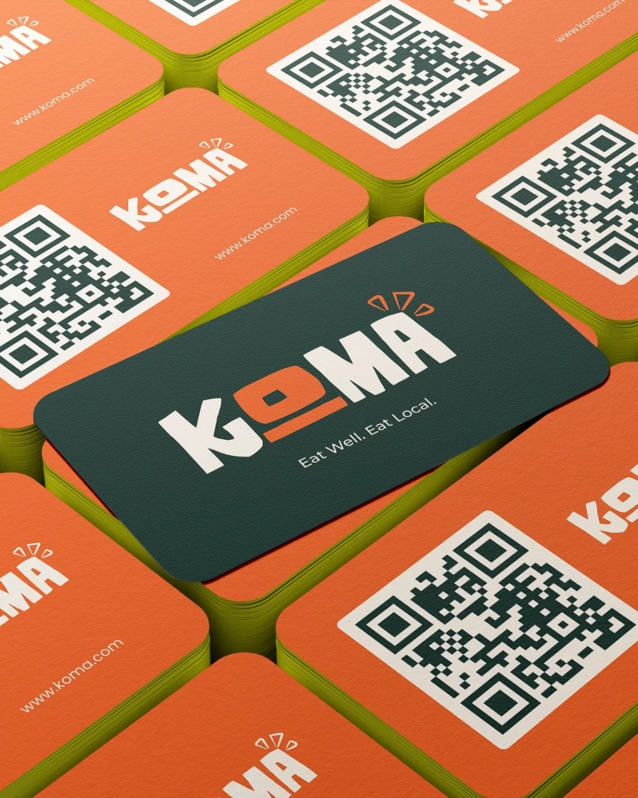
Business Card
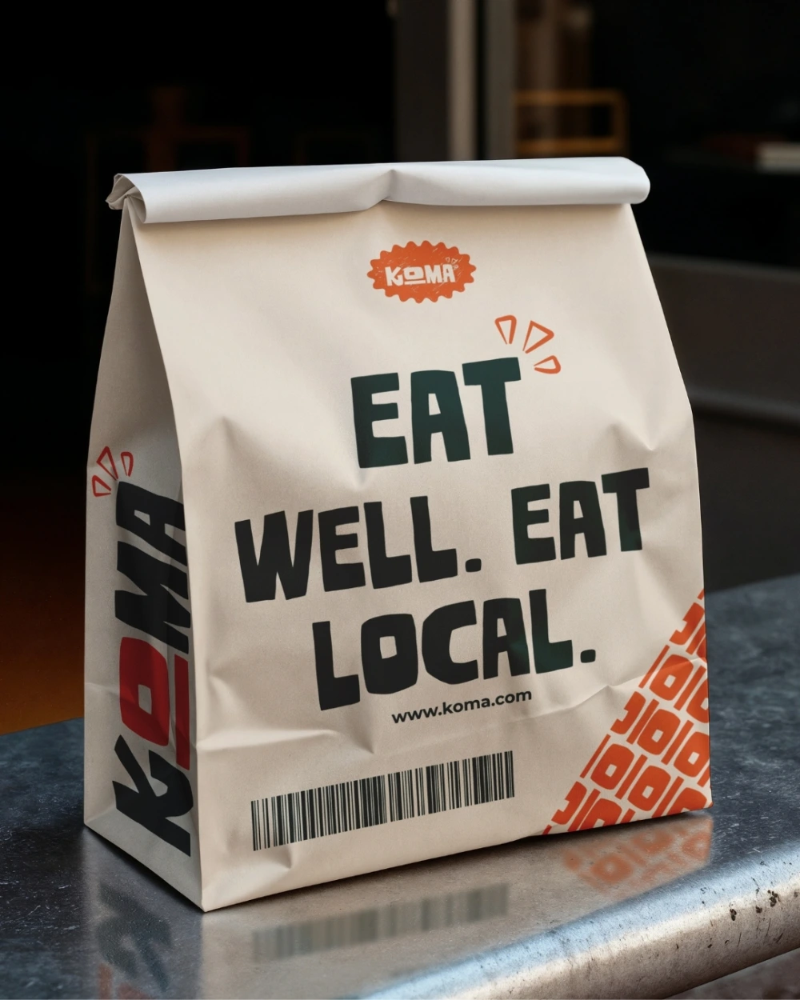
Takeout Bag
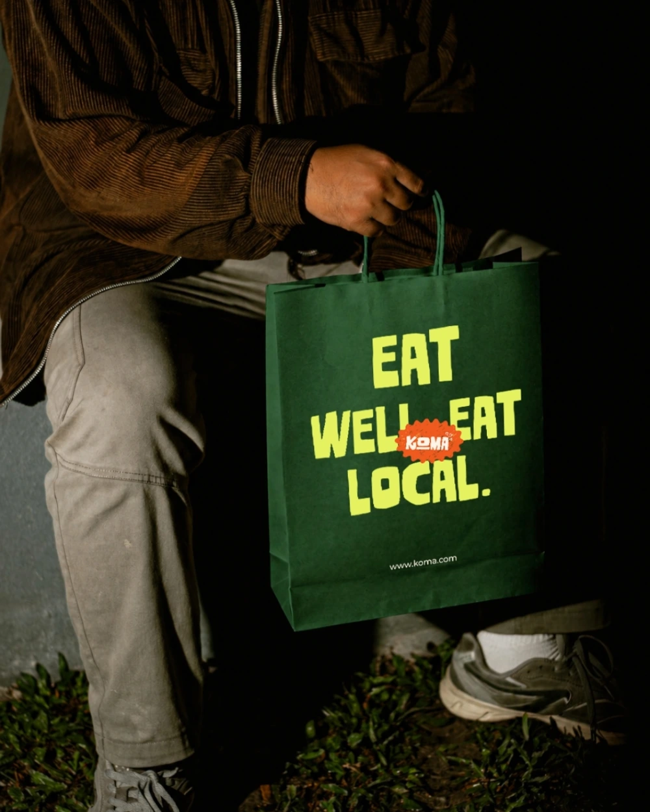
Gift Bag
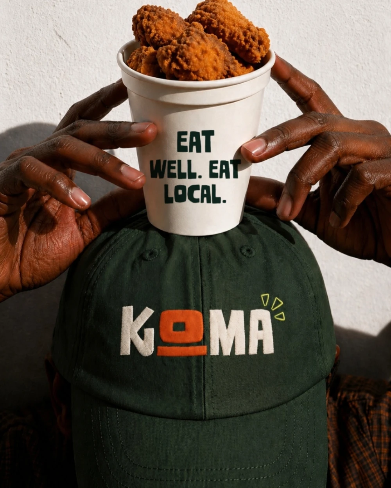
Cap
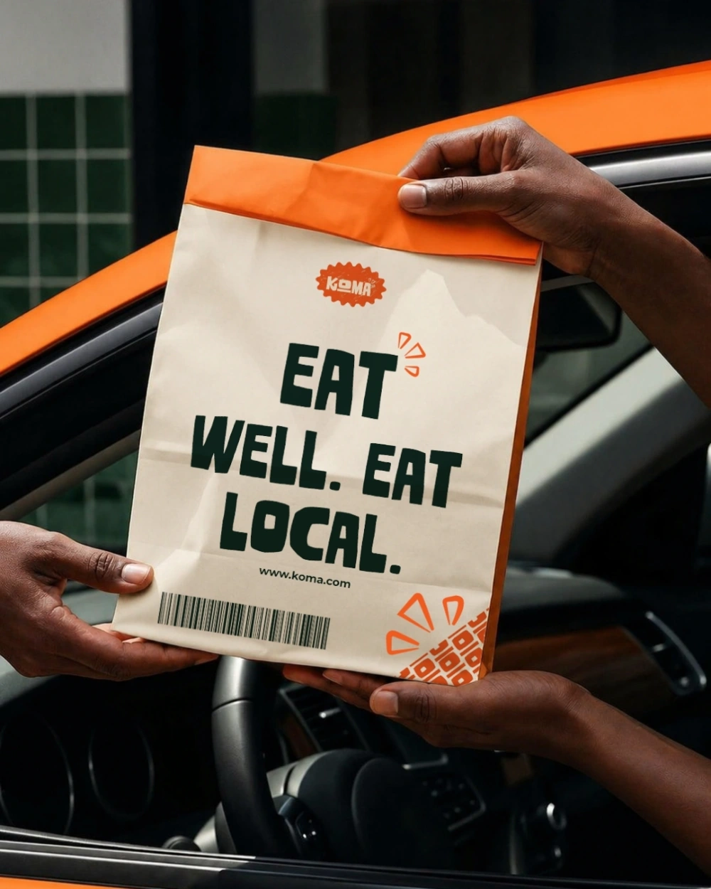
Delivery Bag
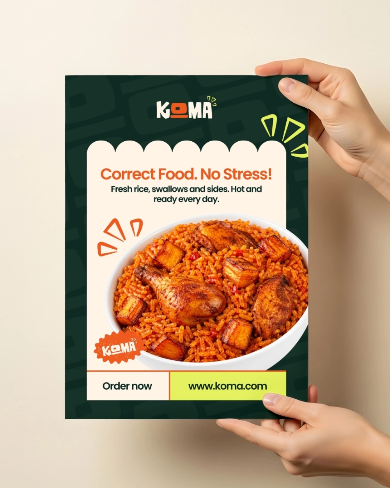
Flyer 1
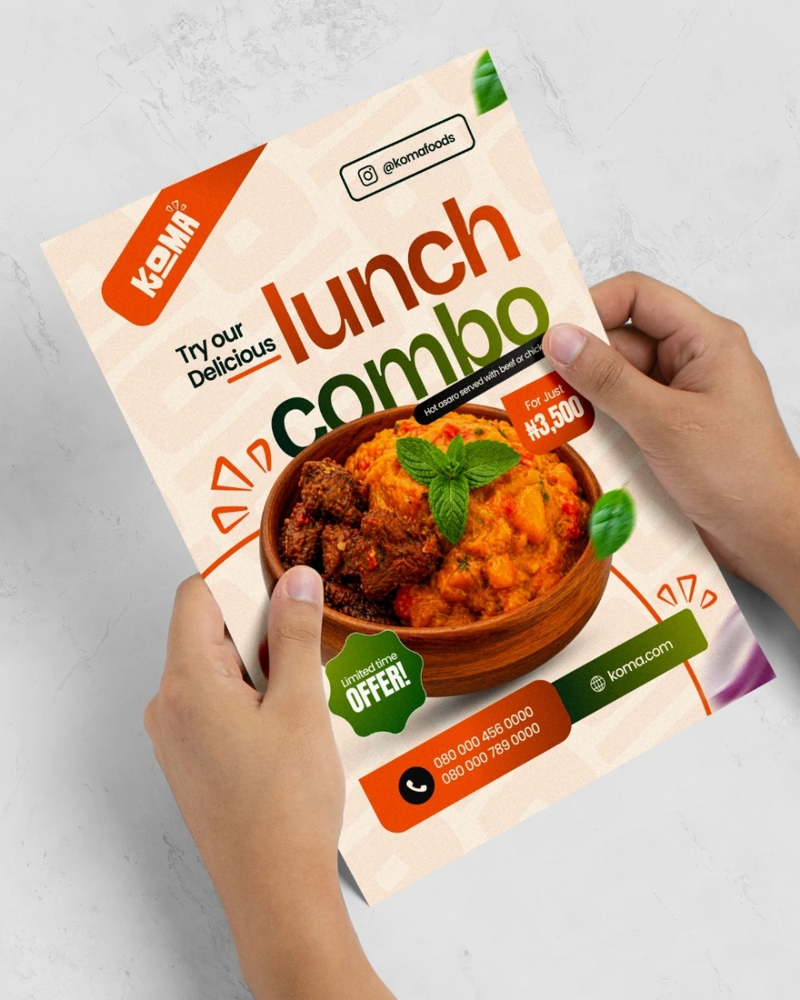
Flyer 2
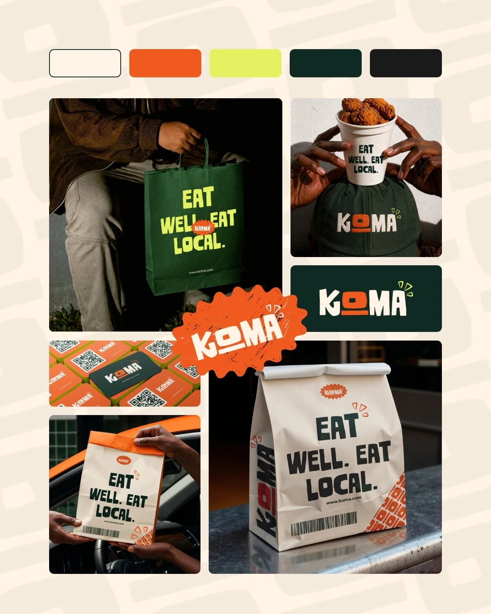
Brand Board
Swipe →
(03) — What I learned
What I Learned
Being told what not to do turned out to be more useful than a fully open brief. Ruling out chef hats, spoons, and forks pushed me toward the hand-cut letterforms and the little flame marks instead of reaching for the usual food-brand visual shorthand.
Working within a single day also meant the color and type decisions had to hold up immediately, there wasn't time to second-guess the green and orange pairing once it was locked in, so I had to trust it and carry it through every mockup.
It was also a good exercise in tone. KOMA needed to feel rooted in local food culture and still read as premium, so a lot of the work was in restraint, keeping the palette confident without tipping into the loud, cluttered look a lot of local food branding leans on.